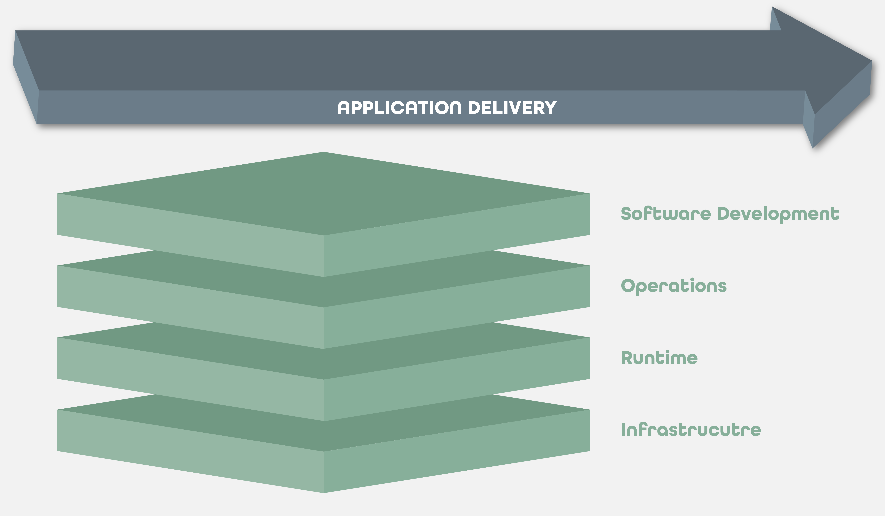
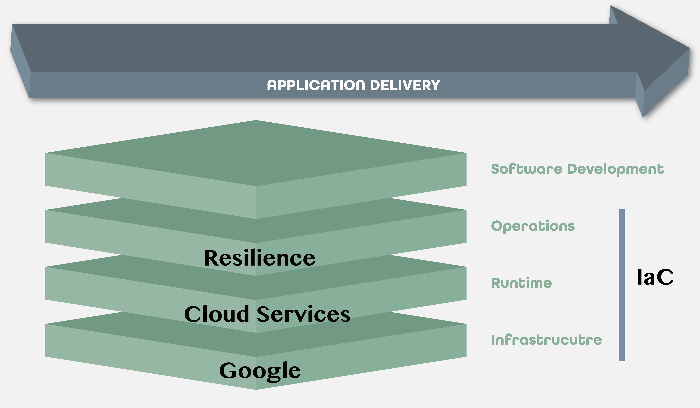
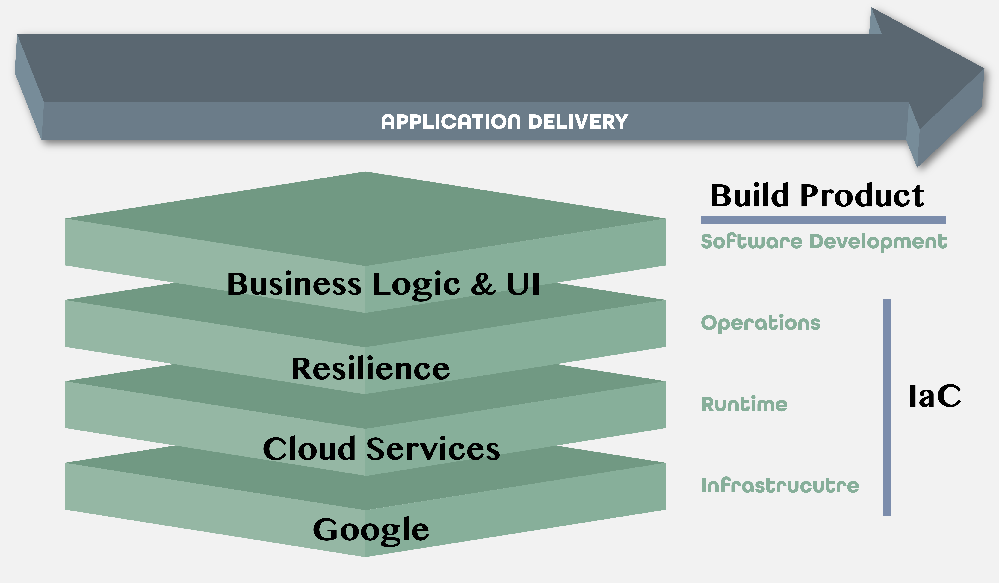
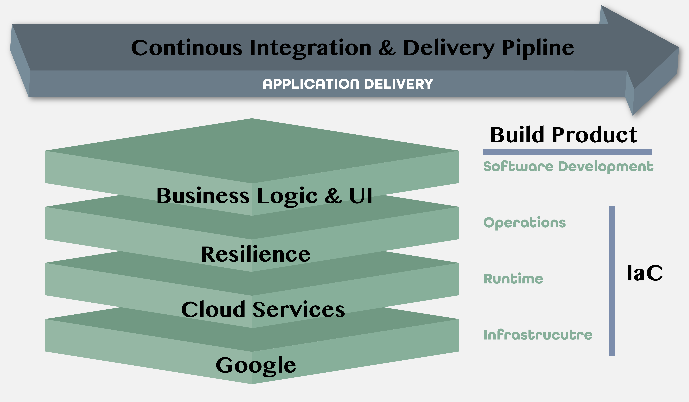
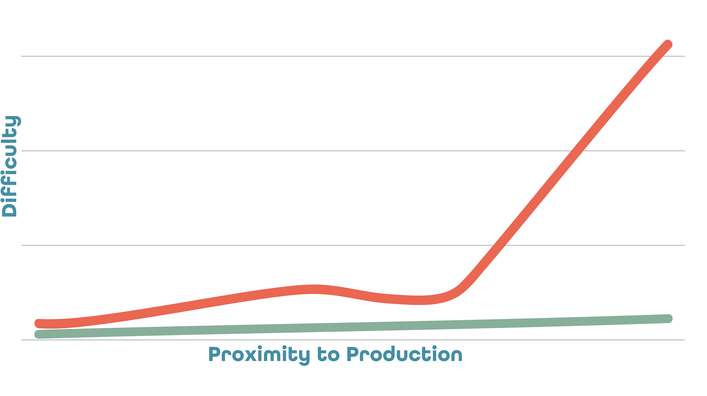

What we Learned
Production Cliff Beware!
Cloud Dev vs. Local Dev
Everything "as-a-service"
How to Custom Build Fabric8
How Logging & Visibility Works
Week 3-7 Accomplishments
Learning Kubernetes
Demo Architectural App
Terraform Automation
Cloud Development Environments
Cloud Documentation
Local Development
CI/CD Environment
Test, Stage, Production
Water Cooler Talks
Monetizing API "as-a-service"
Monitizing Platform "as-a-service"
Phase 2/3 Dev Capacity
What's Next
SDLC Standards
API Gateway
Event Sourcing Demo
CQRS Demo
Custom Fabric8 Builds
Unifying DevOps Namespaces
Needs from Team
Phase 2 UI Component Design
Phase 3 Stock Functionality B2B
Phase 3 Stock Functionality B2C
Technology Vision
Provide a PaaS to support the culture, operations, agility, adaptability, and scalability required
for rapidly developing SaaS companies in any stage of growth
Hundreds of SaaS Companies
Every Industry & Market Segmentation
Perfect for Startups
Existing Platform Migrations
Hundreds of SaaS Companies
Every Industry & Market Segmentation
Perfect for Startups
Existing Platform Migrations
Hundreds of SaaS Companies
Every Industry & Market Segmentation
Perfect for Startups
Existing Platform Migrations
Hundreds of SaaS Companies
Every Industry & Market Segmentation
Perfect for Startups
Existing Platform Migrations
Cloud Provision
Local Dependencies
Build Product
Instant CI/CD
Big Web Application Lifecycle

A complete platform
Operations + Dev combined without silos for complete empowerment and agility
Product release with zero downtime and rolling out features continuously, decoupling deployment
from release
Streamlined delivery to be continuous with quality in mind
Big Web Application Lifecycle

A complete platform
Operations + Dev combined without silos for complete empowerment and agility
Product release with zero downtime and rolling out features continuously, decoupling deployment
from release
Streamlined delivery to be continuous with quality in mind
Big Web Application Lifecycle

A complete platform
Operations + Dev combined without silos for complete empowerment and agility
Product release with zero downtime and rolling out features continuously, decoupling deployment
from release
Streamlined delivery to be continuous with quality in mind
Big Web Application Lifecycle

A complete platform
Operations + Dev combined without silos for complete empowerment and agility
Product release with zero downtime and rolling out features continuously, decoupling deployment
from release
Streamlined delivery to be continuous with quality in mind
The Production Cliff

Starts easy, gets a little harder
Dip of False Mastery, non-linear
Non-Linear
More to deploy, more to configure
Application Automation keeps the curve flat
Lets show you how
Setup Cloud Environment
IaC Automation
Zero day readiness
Day One Features
Select the terminal window with your mouse.